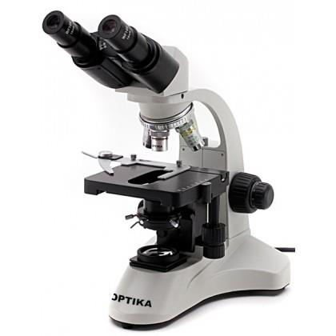
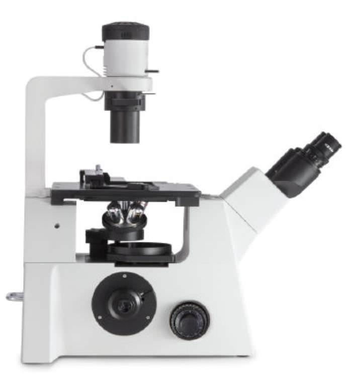
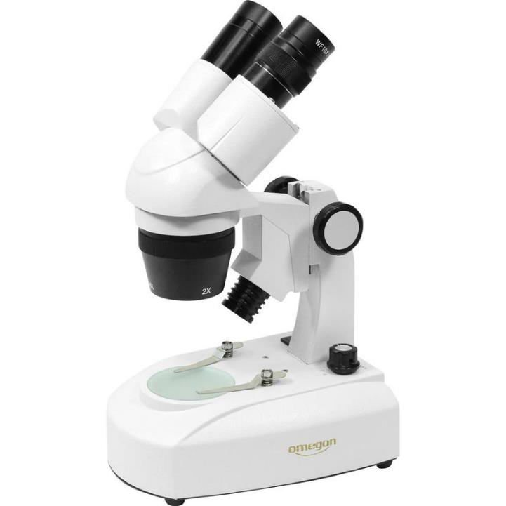

Les types de microscopes
Le microscope reste un outil de diagnostic de premier ordre, en hématologie, en bactériologie, en parasitologie. Mais il n'y a pas un microscope : selon ce qu'on veut voir, une cellule colorée, une bactérie vivante, un anticorps fluorescent, un cristal dans une urine, on ne regarde pas l'échantillon de la même façon.
Un peu d'histoire
Des verres grossissants servent à corriger la vue dès la fin du XIIIᵉ siècle ; le microscope simple (une lentille) est utilisé en histoire naturelle au XIVᵉ siècle ; le microscope composé (groupes de lentilles) date de la fin du XVIᵉ siècle, attribué aux opticiens hollandais Jansen père et fils (vers 1590). En 1609, Galilée construit un occhiolino. Robert Hooke découvre la cellule en 1665 et présente dans Micrographia un microscope à trois lentilles qui a déjà la forme actuelle. Le premier prototype de microscope électronique est construit en 1931 par Ernst Ruska et Max Knoll.



Les types
Le mot microscope vient du grec micros, petit, et skopein, examiner. Selon le système de contraste :
- Fond (champ) clair : la lumière de la source, transmise par l'échantillon, entre directement dans l'objectif ; faible contraste, d'où la coloration ; très utile au laboratoire d'analyses médicales.
- Fond noir : contraste augmenté, pour observer le vivant.
- Fluorescence : en immunologie (immunofluorescence indirecte, IFI) ; il faut une chambre noire et des ampoules spéciales (mercure ou xénon).
- Contraste de phase et interférentiel.
- Polarisant : par exemple pour les cristaux (oxalate de calcium, acide urique, struvite, cystine).
- Inversé : en virologie, très pratique pour étudier les cultures cellulaires.
- Stéréomicroscope (loupe binoculaire).
- Électronique : un faisceau d'électrons remplace la lumière.
- À effet tunnel : en recherche, il visualise les atomes ; une pointe très fine (idéalement un seul atome au bout) balaie la surface ligne par ligne et suit son relief.
Ce qu'est un microscope
Un instrument de précision qui réunit des systèmes optiques (lentilles, filtres, prismes, condenseurs), mécaniques (position de l'échantillon en x, y, z), électriques (transformateur, source lumineuse) et électroniques (appareil photo, vidéo). Les échantillons doivent être préparés pour révéler les détails recherchés. Les microscopes sont en général alimentés en 220 V / 60 Hz ; certains ont un miroir à la place d'une lampe.
À retenir
Fond clair : le plus courant, avec coloration. Fond noir : le vivant. Fluorescence : IFI, chambre noire. Polarisant : cristaux. Inversé : cultures cellulaires. Effet tunnel : atomes.
Microscope composé : fin du XVIᵉ siècle (Jansen). Cellule : Hooke, 1665. Microscope électronique : 1931 (Ruska et Knoll).